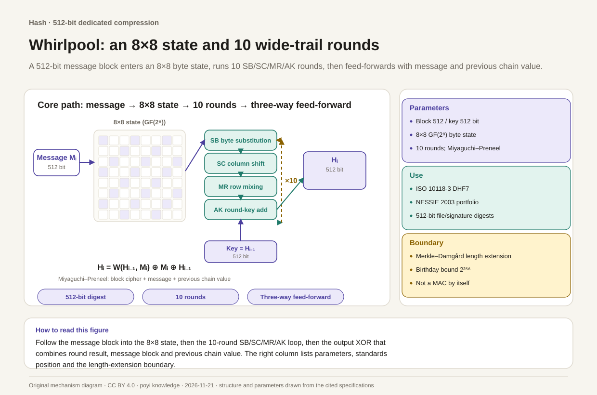
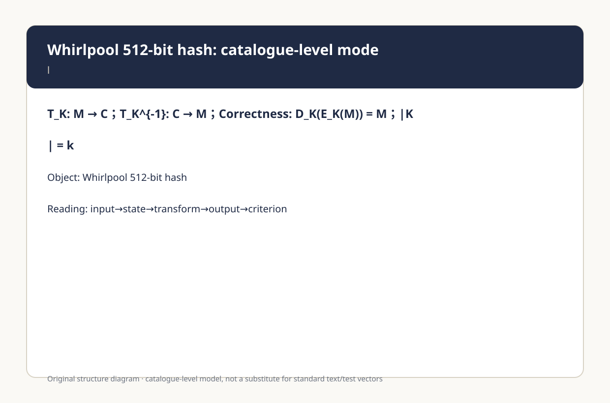

Principles
Algorithm: Whirlpool (Whirlpool 散列). ### 512-bit block, 512-bit key, 8×8 state
Whirlpool's compression function is a dedicated 512-bit block cipher W: 512-bit block, 512-bit key, 10 rounds. The state is an 8×8 matrix of GF(2^8) bytes; each round applies byte substitution SB, column shift SC, row mixing MR and round-key addition AK. The key schedule reuses the same round functions with key-schedule constants. ### Miyaguchi–Preneel and Merkle–Damgård
Messages are processed in 512-bit blocks with the Miyaguchi–Preneel construction:
H_i = W_{H_{i-1}}(M_i) ⊕ M_i ⊕ H_{i-1}
The previous chaining value is both the block-cipher key and a feed-forward term; the message block is both the plaintext and a feed-forward term. The outer iteration is Merkle–Damgård, with a message-length bound of 2^256 bits and a 512-bit digest.

Why it matters
Whirlpool uses an AES-like wide-trail design: SB, SC and MR provide byte-level nonlinearity and row/column diffusion over the 8×8 state, and 10 rounds spread a one-byte difference across the whole state. A 512-bit digest pushes the birthday bound to 2^256, a comfortable margin over 256-bit hashes. It avoids 64-bit multiplication, so both 8-bit microcontrollers and 64-bit CPUs can implement it; that portability is what NESSIE valued.
The round function is table lookups and XORs. An 8-bit implementation can keep the 8×8 state in registers; a 64-bit implementation packs eight columns into eight 64-bit words and processes a column at a time. It has neither SHA-2's 32/64-bit addition chain nor SHA-3's Keccak permutation, so its performance curve resembles AES.
Applications
Whirlpool is one of the hashes selected by NESSIE 2003 and Dedicated Hash-Function 7 in ISO/IEC 10118-3; the 2018 fourth edition still includes it. It appears in “512-bit hash beyond SHA-2” lists, for legacy systems that need a long digest without moving to SHA-3's new construction.
It can appear in digital signatures, file-integrity manifests and password-derivation chains for disk encryption; those uses value the 512-bit output and mature implementations, not novelty. A new protocol without a compatibility constraint normally chooses SHA-512 or SHA3-512 instead.

Limits & attacks
Whirlpool's outer Merkle–Damgård iteration permits length extension: anyone who knows H(M) can compute H(M || pad || X) without a key. It therefore cannot serve as a MAC by itself; wrap it in HMAC or use a keyed construction. As a 512-bit hash its birthday bound is 2^256. That is not “post-quantum security”: Grover-style search reduces an ideal 512-bit hash to roughly the square root of its security level. No practical collision is known on all 10 rounds, but reduced-round distinguishers show the round function is not invulnerable.
Whirlpool provides neither authenticated encryption nor input hiding; it only makes the compressed digest hard to collide. Truncating the digest directly lowers collision cost, so a 512-bit output should not be cut below 256 bits for collision-resistant use.
History
Paulo Barreto and Vincent Rijmen designed Whirlpool and submitted it to NESSIE in 2000. Whirlpool-T in 2001 adjusted the diffusion matrix; the 2003 final revision changed the S-box and circulant matrix to the current 10-round form. It entered the NESSIE 2003 portfolio, then ISO/IEC 10118-3, and remained in the 2018 fourth edition.
Whirlpool-0 used a randomly generated S-box, Whirlpool-T switched to a structured S-box and adjusted MR, and the final version changed both the S-box and circulant matrix. The three versions produce incompatible digests; an upgrade must recompute every historical digest.
Worked example & verification
Formal model and reproduction steps
[h=H(M),\quad H:{0,1}^{*}\to{0,1}^{n}]
Whirlpool: the registered public parameters, key material or randomness, and message are mapped through the stated transformation to an output checked against the registered criterion. The worked example is a structural reproduction, not a new test vector; parameter ranges, standard versions and implementation details remain source-bound.
References
- Wikipedia search entry for Whirlpool 散列. https://zh.wikipedia.org/w/index.php?search=Whirlpool%20%E6%95%A3%E5%88%97
- Handbook of Applied Cryptography (Menezes, van Oorschot, Vanstone). https://www.cacr.math.uwaterloo.ca/hac/